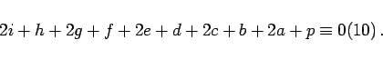

Inhalt Index DeskTop Bronstein

 Algebra und Diskrete Mathematik Elementare Zahlentheorie Codierungen Prüfzeichenverfahren
Algebra und Diskrete Mathematik Elementare Zahlentheorie Codierungen Prüfzeichenverfahren


EKONS ist die Abkürzung für ,,Einheitliches Kontonummernsystem``, das bei Banken und Sparkassen verwendet wird. Die Nummern sind maximal zehnstellig (je nach Geschäftsvolumen). Die ersten (maximal 4) Ziffern dienen der Klassifikation der Konten. Die restlichen 6 Ziffern bilden die eigentliche Kontonummer einschließlich der Prüfziffer, die an der letzten Stelle steht. Bei den einzelnen Banken und Sparkassen sind unterschiedliche Prüfziffernverfahren üblich, z.B.:
|  | (5.287) |
Bei Variante a) entdeckt man alle Fehler durch Vertauschung zweier benachbarter Ziffern und fast alle Fehler durch Verwechslung einer Ziffer.
Bei Variante b) werden dagegen jeder Fehler durch Verwechslung einer Ziffer und fast alle Fehler durch Vertauschung zweier benachbarter Ziffern erkannt. Drehfehler nicht benachbarter Ziffern und Verwechslungen zweier Ziffern werden oft nicht aufgedeckt.
Daß man das leistungsfähigere Prüfziffernsystem zum Modul 11 nicht verwendet, hat außermathematische Gründe. Das nichtnumerische Zeichen X anstelle der Prüfziffer 10 (s. ISBN-Buchnummern) erfordert eine Erweiterung der Eingabetastatur. Dagegen hätte ein Verzicht auf Kontonummern mit der Prüfziffer 10 bei Umstellung auf das einheitliche Nummernsystem in einer beträchtlichen Zahl von Fällen eine Erweiterung der ursprünglichen Kontonummern nicht zugelassen.